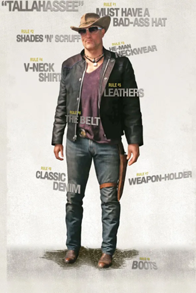

Appearance, Personality and Quirks
Tallahassee seems to be a white American man in his early to mid forties. He favors the "cowboy" look, always wearing a "real deal brazil" hat to hide his bald head, and carrying a gun in a leg holster. He commonly wears jackets at night, either being leather or the snakeskin one stolen from Bill Murray's closet. Otherwise, he wears plain t-shirts and jeans, along with boots to go with his hat. During his fight against the zombies that attacked Pacific Playland, Tallahassee donned a vest for holding his ammo and extra weapons. He discarded it after using the prize booth to shoot the remaining zombies at his leisure.

Tallahassee has a special hatred for zombies and loves killing them in creative ways, becoming proficient in a plethora of weaponry to do so. This is not without good reason, because before Zombieland, Tallahassee allegedly had a dog which he loved, until it was killed by zombies. Later, he revealed that the dog was actually his young son, Buck, and his death left Tallahassee a hardened and angry person.
After spending time with Little Rock, Tallahassee found a replacement of sorts for Buck, as he saw her as a surrogate child to look after. However, likely due to the trauma he experienced when he lost his son, he began to show signs of overbearingness, even if he meant well. In the end, he accepts Little Rock's status, and lets her live her own life, while keeping close to his family, especially her.
Tallahassee's philosophy is that you should blow off steam every once in a while or else you will go crazy, and first demonstrates this by beating up a minivan with a crowbar. He also has an extreme love for Twinkies, and is on a mad hunt for a Twinkie throughout Zombieland, regardless of the dangerous situations this tends to put him in.
Beyond that, he is a fan of Bill Murray, to whom he cried out upon meeting him: "God damnit, BILL FUCKING MURRAY!" He is also in love with Twinkies because they are delicious. Besides zombies, he also hates pacifists, especially Berkeley, saying that those people should be killing the dead, not following them, and the fact that he rages out upon hearing that Berkeley is one.